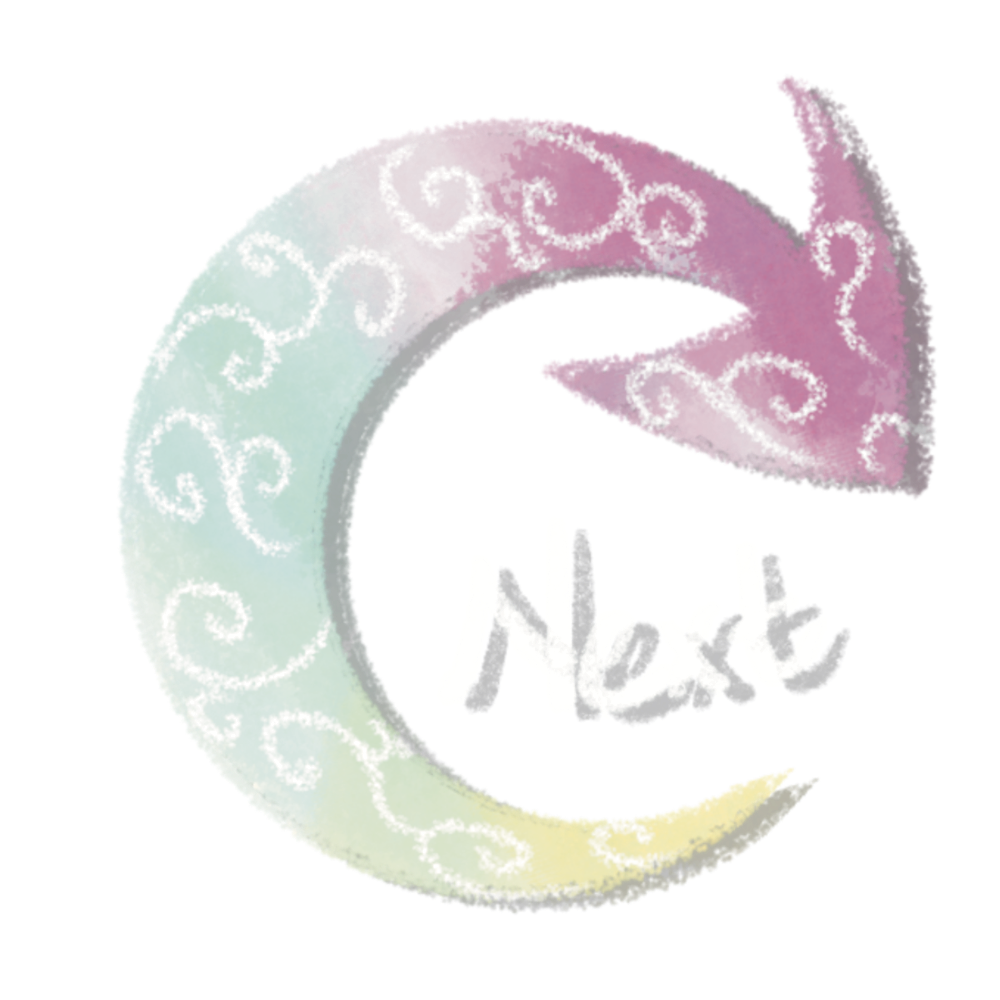

5/7（日）
第一個能從腦海裡撈起的，不意外是促使我身在此處的最後一根稻草。
在水上的我就算完全放鬆，也會一次次被浮力托起，就好像當時一般。那時的我還能有個能依靠的人，他太可靠了，我事事依賴著他的能力、他的建議、他的決定，直到有一天的我像是他所有結果的總和。
那在天橋上的一幕仍如此記憶猶新。眼前的人看向我的方位，焦距卻不聚集在我的臉上，而是我身後的出口。他掰弄著手指，乍看之下還以為在算些什麼，又或許他確實正琢磨著如何吐出那些精心算計過的話語。
「我們得分開。」
在他來得及說任何可能撕裂我的話之前，我便像是想要搶得優先權一樣率先開了口。
「我用戀愛在逃避著我所認為的自己。」
話音剛落，他的手指在一瞬間僵硬，收起了凝視遠方的視線，轉而盯著我的眉心看。
話音剛落，他的手指在一瞬間僵硬，收起了凝視遠方的視線，轉而盯著我的眉心看。
雨打在頭頂的遮雨棚上，聲響清脆而爽朗，沿著弧度滑下匯集出腳下的車流。一次次降落的重量像是在給他的發言打預備拍，但他遲遲沒有開口。
「再説了，我寧願與車流同行、寧願自己等雨停。」
時間要到了，我只好又補上這句。
諷刺的是，直到我說出決斷宣言的此刻，他才恍然發現我是個有煩惱的人。
他百般的不解，但來不及瞭解。大概是不解在為何我會在愛情裡像個愛喝牛奶的乳糖不耐症，又對牛奶百般挑剔。
趁他還未發出聲音，我向後踏出了拉遠距離的第一步、再一步、第三步......最後他終於問了句像是硬擠出來的話語，然也已經無法挽回任何事。我甚至已經不願細聽他最終的一句話是什麼，反正我相信那不會是讓我想留在記憶中的內容。
時間已到，我不戀棧地斷然離開，前往自己將要停泊的下一個行程。
我依然必須將自己塞滿，必須由「我」將自己塞滿。
這是我至今堅持的信念。然而心底一角仍有個困惑在作祟，因為我至今無法確定問題的癥結點，無法確定究竟應該被換掉的是他，還是我自己。
無論如何，我在這裡了，在一池裝滿了雜念的湖裡。
留下的是我，我得證明自己應該被留下。
